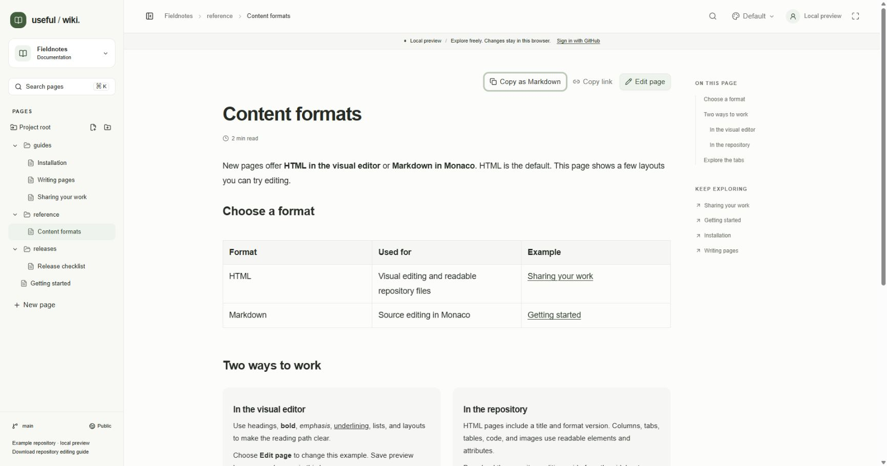
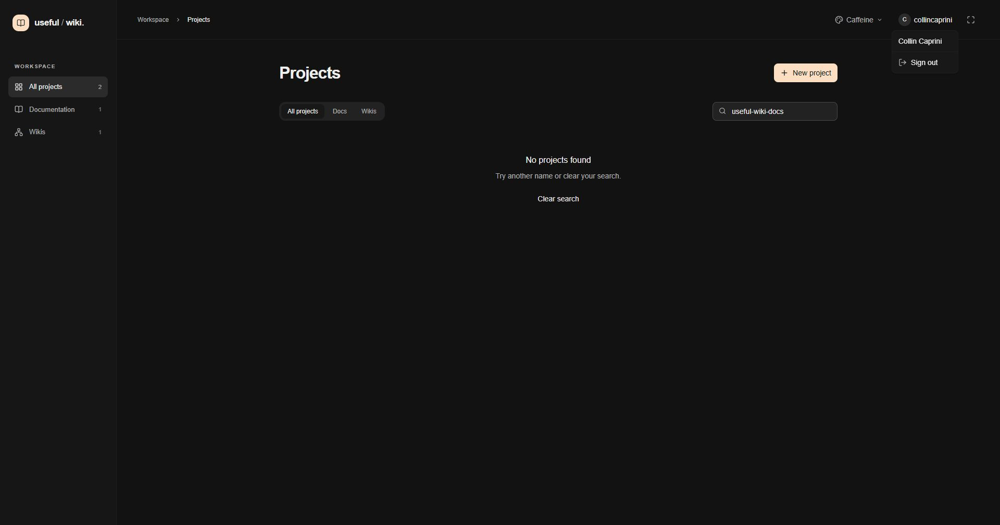

Useful-wiki uses your repository's GitHub permissions. Saving a page publishes a commit to the project's selected branch. Sharing a link gives someone the address; it does not change who can read or edit the repository.
Open the page you want to share. If you are editing it, save the changes you want other readers to see.
In reading mode, choose Copy link above the page. On a narrow screen this action may appear as a link icon without its text label.
Wait for the action to show Copied, then paste the address into your message or another document.
If clipboard access is unavailable, copy the address from your browser instead.
Page addresses include the repository owner, repository name, folders, and filename. Changing the page title leaves its address unchanged. Renaming or moving the file changes the address, so update shared links afterward.
The address opens the saved repository version. Unsaved edits stay in your browser and are not included in the link. Another reader can reload the page after you save to load the newer version; editing is not a live shared session.

Copy link and Copy as Markdown appear above the page in reading view. This is the Fieldnotes local preview; copying its link does not publish browser edits.
To share a folder, click its name in the sidebar to open its generated index, then copy the browser address.
To share a section, use a heading link from On this page on a wide screen. Copy that link's address using the browser's link menu, or copy the browser address after following the heading.
Keep the heading fragment, the part after #, when pasting a section link.
A section inside a content tab opens the relevant tab before scrolling. Heading text usually determines its anchor, so changing the heading can change the link. Explicit heading IDs from repository-authored HTML are preserved.
Open the saved page in reading mode and choose Copy as Markdown.
When the button shows Page copied, paste the content into your document, notes, or LLM conversation.
If clipboard access is blocked, the Copy page dialog opens with selected Markdown. Copy that text manually.
The copy includes the page title and complete content: inactive tabs, columns, lists, checklists, tables, code, links, and image references. It omits visual styling and image bytes. Relative links and image references may need adjustment outside the repository.

The Copy as Markdown button is focused on the local-preview Content formats page. Use this action to copy the complete saved page, including content in inactive tabs.
Copied content is a separate copy. Future edits to the source page do not update it, and GitHub access controls do not follow text you paste elsewhere. Share a page link when readers need the current saved version.
Use Copy code in a code block's header to copy that block as plain text with its whitespace intact. This works while reading or editing. If copying fails, select the code and use Ctrl+C or Cmd+C.
Open the destination page and use Copy link.
Edit the source page and select the words that should become the link.
Choose Add or edit link, paste the full address into Link URL, and choose Apply.
Save, then follow the link from reading mode to check its destination.
In the visual link editor, use a full address, a root-relative path beginning with /, or a same-page fragment beginning with #. Bare input is treated as a website address. If you edit HTML or Markdown directly in the repository, use document-relative paths to keep links portable; see Editing from your repository.
Document-relative links between recognized project pages also feed Keep exploring and wiki backlinks. Full hosted addresses open the destination but may not be recognized by those discovery lists. Review links after a file moves or is renamed.
A public repository is public. Anyone can read its registered useful-wiki project through a direct link without signing in. This documentation repository is public, so add only material intended for public readers. A public page link does not give visitors permission to edit.
A private repository requires the visitor to sign in with GitHub and have access to that repository. A copied link does not grant access. Private pages, images, search results, and backlinks use the visitor's repository authorization.
Check the Public or Private indicator and selected branch at the bottom of the project sidebar.
If a collaborator needs access, manage their repository or organization permissions in GitHub.
Share the page address and have the collaborator sign in with their own GitHub account when required.
Use the repository link below the visibility indicator to open the repository in GitHub. Useful-wiki does not provide its own invitations or a separate permission system.
GitHub read access permits browsing. GitHub write access is required to publish page edits and create, rename, move, or delete files. An archived repository is read-only in the app. Project registration also requires write access when that repository has not already been registered.
Organization approval, SSO authorization, and branch rules still apply. A branch that requires pull requests can reject a direct save even when you normally have write access. Useful-wiki does not currently offer pull requests, suggestions, or live co-editing.
Choose Sign in in the header and complete GitHub's authorization flow with your own account.
Return to the project. Editing actions appear when GitHub grants write access.
When finished, save or copy any draft content you need, open your account menu in the header, and choose Sign out.
Sign-out clears useful-wiki drafts stored in that browser tab's session and reloads the app. Sessions expire; sign in again if your authorization expires or is revoked. Repository selection organizes projects inside the app but does not narrow the GitHub OAuth grant: the app requests the broad repo scope.

The account menu in a signed-in installation exposes Sign out. This is an actual account session, not the demo; Sign out was not selected for the capture.
After a successful page save, find Saved to GitHub. View commit above the content.
Open View commit to inspect the published change in GitHub.
For wider repository history, open the repository from the sidebar and use GitHub's history tools.
GitHub is the source of saved files and history. Drafts remain browser data until a save succeeds. If a save fails or conflicts with another change, keep your draft and follow Troubleshooting.
Demo projects are labeled Local preview and save changes only in the current browser. Copying a demo link shares the route to that example; it does not send your local edits, uploaded images, or drafts to another person. Use a connected repository to publish shared documentation, or copy the content as Markdown when you need a separate text copy.
Continue with Writing pages or Organizing pages, or return to Welcome.